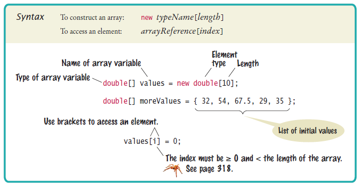

Sprint 2
Inhoud sprint 2
- Object oriented programming
- Klassen, objecten en constructoren
- Methodes
- Array en arraylist
(Huis)werk
- Alle oefeningen/quizzes/opdrachten van hoofdstuk 1, 6, 7, 10
Inleveropdracht
- Rekenmachine + methods
Class & Object
Object Oriented Programming = OOP
Objecten
- Objecten zijn overal te vinden rondom ons heen
- Objecten hebben een "state" en een "behaviour"
- Alles behalve primitieve types zijn objecten in Java
Klassen
- Class = een "blueprint" van een object
- Ze beschrijven de "state" en "behaviour" van een object
public class Car {
String brand;
int horsepower;
void goForward() {}
void brake() {}
}
Maken van klasses
- We plaatsen eerst de velden in een klasse (state)
- Daarna de plaatsen we de methodes in een klasse (behaviour)
public class Pokemon {
String name;
String type;
int level = 1;
int hp = 50;
public void attack() {
System.out.println("Attacking!");
}
public void levelUp() {
level++;
hp += 10;
System.out.println("I am now level " + level);
}
}
Maken (instantiëren) van een object
- We instantiëren een object adhv het "new" keyword
- We kunnen oneindig veel instanties maken van een klasse
pulic class Main {
public static void main(String[] args) {
Pokemon p1 = new Pokemon();
}
}
Constructors
Wat is het
- Speciaal stukje code, onderdeel van klasse
- Word eenmalig uitgevoerd bij het instantiëren
- Kan ook de state van een object initialiseren
Maken van een constructor
- Staat na de fields (conventie)
- Heeft dezelfde naam als de class
- Heeft een code-block
public class Pokemon {
String name;
String type;
int level = 1;
int hp = 50;
public Pokemon() {
}
public void attack() {
System.out.println("Attacking!");
}
public void levelUp() {
level++;
hp += 10;
System.out.println("I am now level " + level);
}
}
Code in constructor
- Logica die eenmalig word uitgevoerd
- Initialiseren van de fields
public class Pokemon {
String name;
String type;
int level = 1;
int hp = 50;
public Pokemon(String name) {
System.out.println("Pokemon object aangemaakt");
this.name = name;
}
public void attack() {
System.out.println("Attacking!");
}
public void levelUp() {
level++;
hp += 10;
System.out.println("I am now level " + level);
}
}
Gebruik maken van de constructor
- Bij het aanmaken van een object word de constructor aangeroepen (gecalled)
public class Main {
public static void main(String[] args) {
Pokemon p1 = new Pokemon();
Pokemon p2 = new Pokemon("Pikachu");
}
}
Methods
Wat zijn methodes
- Bestaan in meeste programmeertalen
- Een methode heeft een bepaalde functionaliteit
- Objecten kunnen deze callen
- Naam is meestal een werkwoord
- Kunnen oneindig vaak gecalled worden
Maken van methode
- Hebben een modifier meestal "public"
- Hebben een return type die iets terug zal geven
- Hebben een naam om aan te roepen
- Hebben parameter-list om values mee te geven
- Hebben een body met code die word uitgevoerd
Voorbeelden van methodes
public int addTwoNumbers(int a, int b) {
return a + b;
}
public String addTwoStrings(String a, String b) {
return String.format("%s %s", a, b);
}
public void repeatAfterMe(String a) {
System.out.println(a);
}
Methode aanroepen
- Maak een object
- Roep de methode op adhv het object variabele
public class Main {
public static void main(String[] args) {
Pokemon p1 = new Pokemon();
p1.sayHi();
}
}
Methode aanroepen met parameter
- Maak een object
- Roep de methode op adhv het object variabele
- Geef de parameter mee tussen de haakjes
public class Main {
public static void main(String[] args) {
Pokemon p1 = new Pokemon();
p1.repeatAfterMe("Hello world!");
}
}
Methode aanroepen met return type
- Maak een object
- Roep de methode op adhv het object variabele
- Sla de teruggegeven value op in een variabele
public class Main {
public static void main(String[] args) {
Pokemon p1 = new Pokemon();
int addedNumbers = p1.addTwoNumbers(6, 8);
}
}
Array & ArrayList
Wat is een array
- We hadden het er kort over (.toCharArray())
- Handig om meerdere waarden op te slaan in 1 variabele
- Een container object waarin meerdere waardes van hetzelfde type kunnen worden opgeslagen.
- Je moet aangeven hoeveel waarden je wilt opslaan
Maken van een array
Index van een array
- Index begint bij 0
- Array lengte is aantal waarden startend vanaf 0

Waarde in een array
public static void main(String[] args) {
String[] names = { "Robbe", "Bram", "Rens", "Marlon" };
System.out.println(names[0]); // Output = Robbe
}
public static void main(String[] args) {
String[] names = new String[4];
names[2] = "Robbe"; // { "", "", "Robbe". "" }
}
Wat is een ArrayList
- Class van Java Collection Framework
- Gebruikt dynamische arrays
- Geen limiet op lengte en moet ook niet voor gedefinieerd worden
- Standaar is lengte 10 maar schaalt omhoog wanneer nodig is
- Trager en zwaarder dan standaard array
Gebruik van ArrayList
public static void main(String[] args) {
ArrayList<String> names = new ArrayList<String>();
names.add("Robbe");
}
public static void main(String[] args) {
ArrayList<String> names = new ArrayList<String>();
names.get(0);
}
public static void main(String[] args) {
ArrayList<String> names = new ArrayList<String>();
names.remove("Robbe");
}